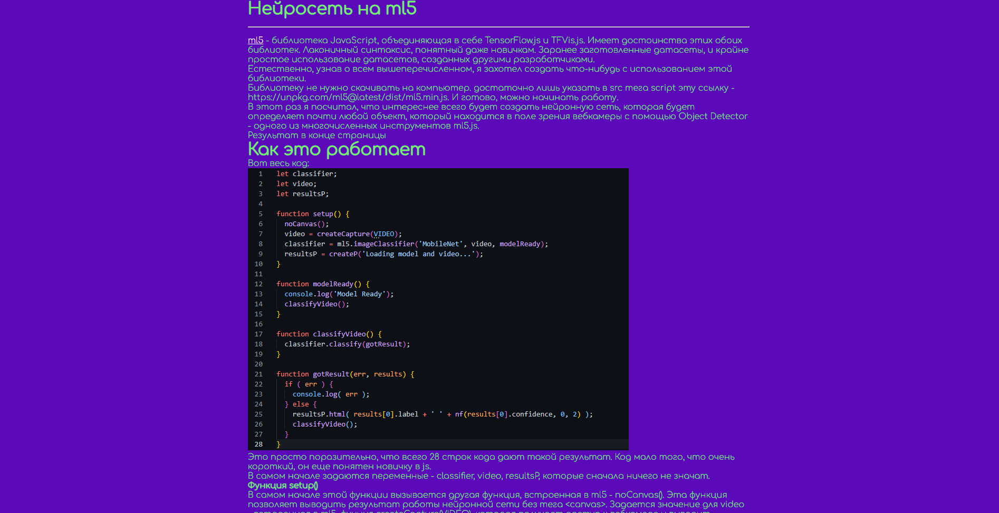
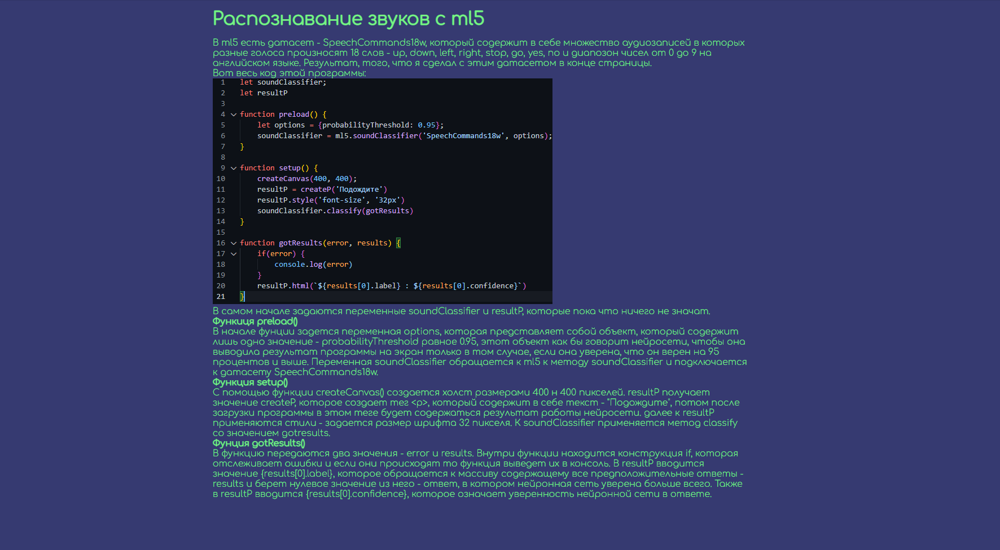

Мои нейросети
Тут продемонстрированы различные способы создания нейронных сетей на языке JavaScript
Первая нейронная сеть
Нейросеть распознающая рукописные цифры
Нейросеть созданная с Teachable Machine
Нейросеть созданная с ml5.js
Распознавание голосовых команд с ml5.js
Первая нейронная сеть
Моя первая нейросеть, написанная на TensorFlow.js
Нейросеть, распознающая рукописные цифры
Моя вторая нейронная сеть, написанная на TensorFlow.js. Задачаа этой нейронной сети - распознавать цифры, написанные от руки.
Нейросеть, созданная с Teachable Machine
Писать код - тяжело и нудно. Поэтому умные люди из Google создали Teachable Machine, с помощью которого можно создать свой датасет, и свою нейросеть "в пару кликов".
Нейросеть созданная с помощью ml5

ml5 - это почти тоже самое, что и TensorFlow.js, однако его синтаксис куда проще. Также он объединяет в себе и TensorFlow.js и TFvis.js, что позволяет упростить код еще сильнее. Короче, ml5 - это TensorFlow.js но с куда более лаконичным и простым синтаксисом.
Распознавание голосовых команд с ml5

Нейросеть, написанная на ml5.js, которая распознает голосовые команды.